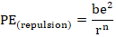
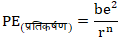
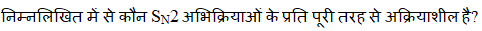
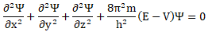
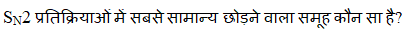
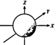
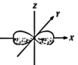
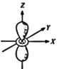
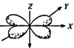

Which of the following is the statement of the Heisenberg Uncertainty Principle? निम्नलिखित में से कौन हाइजेनबर्ग अनिश्चितता सिद्धांांत का कथन है?


AElectrons revolve in well-defined orbits around the nucleus. इलेक्ट्रॉॉन नाभिक के चारों ओर अच्छीी तरह से परिभाषित कक्षााओं में घूमते हैं।
BAll material particles possess dual characters. सभी भौतिक कणों में दोहरे गुण होते हैं।
CThe simultaneous measurement of the position and momentum of a small particle is not possible with absolute accuracy. एक छोटे कण की स्थिति और गति का एक साथ माप पूर्ण सटीकता के साथ संभव नहीं है।
DIn a strong magnetic field, an atomic spectrum is split into a number of lines. एक मजबूत चुंबकीय क्षेत्र में, एक परमाणु स्पेक्ट्रम कई रेखाओं में विभाजित होता है।
EXPLANATIONCorrect Answer: C
The correct answer is C because it matches the definition: The simultaneous measurement of the position and momentum of a small particle is not possible with absolute accuracy. एक छोटे कण की स्थिति और गति का एक साथ माप पूर्ण सटीकता के साथ संभव नहीं है। .
Question 52ID: 2622782Page: 197
While calculating the lattice energy of an ionic solid, the repulsion energy is – Which of the following is indicated by “b”? एक आयनिक ठोस की जालक ऊर्जा की गणना करते समय, प्रतिकर्षण ऊर्जा होती है – निम्नलिखित में से कौन सा "b" द्वाारा इंगित किया गया है?
AElectronic charge इलेक्ट्रिक चार्ज
BRepulsion coefficient प्रतिकर्षण गुणांक
CDistance between the ions आयनों के बीच की दूरी
DBorn repulsion exponent प्रतिकर्षण प्रतिपादक
EXPLANATIONCorrect Answer: B
The correct answer is B because it matches the definition: Repulsion coefficient प्रतिकर्षण गुणांक .
Question 53ID: 2622783Page: 198
Which of the following statements is in accordance with the lattice energy of an ionic substance? निम्नलिखित में से कौन सा कथन किसी आयनिक पदार्थ की जालक ऊर्जा के अनुसार है?
AA greater stability of the ionic bond is indicated by a greater value of lattice energy. आयनिक बंधन की अधिक स्थिरता जालक ऊर्जा के अधिक मूल्य से संकेतित होती है।
BA greater lattice energy indicates a lower value of the melting point. अधिक जालक ऊर्जा कम गलनांक मान दर्शाती है।
CA harder substance has lower lattice energy. कठोर पदार्थ की जालक ऊर्जा कम होती है।
DGreater values of ionic charge and ionic radii give a greater value of lattice energy. आयनिक आवेश और आयनिक त्रिज्याा के अधिक मूल्य जालक ऊर्जा का अधिक मूल्य देते हैं।
EXPLANATIONCorrect Answer: A
The correct answer is A because it matches the definition: A greater stability of the ionic bond is indicated by a greater value of lattice energy. आयनिक बंधन की अधिक स्थिरता जालक ऊर्जा के अधिक मूल्य से संकेतित होती है। .
Question 54ID: 2622798Page: 198
Which of the following is one of the salient features of antibonding molecular orbitals? निम्नलिखित में से कौन-सा प्रति-बंधन आण्विक कक्षकों की मुख्य विशेषताओं में से एक है?
AEvery electron in this molecular orbital contributes to repulsion between two atoms. इस आणविक कक्षीीय में प्रत्येक इलेक्ट्रॉॉन दो परमाणुओं के बीच प्रतिकर्षण में योगदान देता है।
BIt has high electron density in the region between two atomic nuclei. इसमें दो परमाणु नाभिकों के बीच के क्षेत्र में उच्च इलेक्ट्रॉॉन घनत्व होता है।
CIt has lower energy than the atomic orbitals from which it is formed. इसकी ऊर्जा उन परमाणु कक्षोंों की तुलना में कम होती है जिनसे यह बना है।
DIt is formed when the atomic orbitals’ lobes have the same signs. यह तब बनता है जब परमाणु ऑर्बिटल्स के लोब में समान संकेत होते हैं।
EXPLANATIONCorrect Answer: A
The correct answer is A because it matches the definition: Every electron in this molecular orbital contributes to repulsion between two atoms. इस आणविक कक्षीीय में प्रत्येक इलेक्ट्रॉॉन दो परमाणुओं के बीच प्रतिकर्षण में योगदान देता है। .
Question 55ID: 2622799Page: 198
Which of the following is a disadvantage of the (MO) Molecular Orbital Theory? निम्नलिखित में से कौन सा आण्विक या अणु कक्षक सिद्धांांत (MO) का नुकसान है?
A[Image/Diagram]
BResonance is not a part of this theory. रेजोनेंस इस सिद्धांांत का हिस्साा नहीं है।
CIt is simple to apply. इसे प्रयोग में लाना आसान है।
DElectrons in molecules are localised as if they are in isolated atoms. अणुओं में इलेक्ट्रॉॉन स्थानीयकृत होते हैं जैसे कि वे पृथक परमाणुओं में हों।
EXPLANATIONCorrect Answer: B
The correct answer is B because it matches the definition: Resonance is not a part of this theory. रेजोनेंस इस सिद्धांांत का हिस्साा नहीं है। .
Question 56ID: 2622811Page: 199
Grignard reagents are alkyl magnesium halides. Which of the following cannot be one of the halogens to prepare Grignard reagents? ग्रिग्नाार्ड अभिकर्मक एल्कााइल मैग्नीीशियम हलाइड्स हैं। ग्रिग्नाार्ड अभिकर्मकों को तैयार करने के लिए निम्नलिखित में से कौन सा हलोजन नहीं हो सकता है?
AChlorine क्लोोरीन
BBromine ब्रोोमिन
CFluorine फ्लोोरीन
DIodine आयोडीन
EXPLANATIONCorrect Answer: C
The correct answer is C because it matches the definition: Fluorine फ्लोोरीन .
Question 57ID: 2622855Page: 199
Page: 199 Q.No: 57 2622855
AThe reaction rate is halved. प्रतिक्रिया की दर आधी हो जाती है
BThe reaction rate does not change. प्रतिक्रिया दर नहीं बदलती है
CThe reaction rate is doubled. प्रतिक्रिया की दर दोगुनी हो जाती है
DThe reaction rate is tripled. प्रतिक्रिया दर तीन गुना है
EXPLANATIONCorrect Answer: C
The correct answer is C because it matches the definition: The reaction rate is doubled. प्रतिक्रिया की दर दोगुनी हो जाती है .
Question 58ID: 2622856Page: 200
Page: 200 Q.No: 58 2622856

AMethyl halides मिथाइल हलाइड्स
BPrimary alkyl halides प्रााथमिक एल्कााइल हलाइड्स
CTertiary halides तृतीयक हलाइड्स
DVinylic halides वाइनिलिक हलाइड्स
EXPLANATIONCorrect Answer: D
The correct answer is D because it matches the definition: Vinylic halides वाइनिलिक हलाइड्स .
Question 59ID: 2622863Page: 200
Which of the following methods of forming aryl halides requires the diazonium salt to be warmed in the presence of copper powder when it decomposes to yield halobenzen एरील हैलाइड्स बनाने की निम्नलिखित विधियों में से किस विधि में डायज़ोोनियम नमक को तांबे के पाउडर की उपस्थिति में गर्म करने की आवश्यकता होती है जब यह हेलोबेंजीन उत्पन्न करने के लिए विघटित हो जाता है?
ASchiemann reaction शिमैन प्रतिक्रिया
BSandmeyer’s reaction सैंडमेयर की प्रतिक्रिया
CDirect halogenation of benzene बेंजीन का प्रत्यक्ष हैलोजनेशन
DGattermann reaction गैटरमैन प्रतिक्रिया
EXPLANATIONCorrect Answer: D
The correct answer is D because it matches the definition: Gattermann reaction गैटरमैन प्रतिक्रिया .
Question 60ID: 2622878Page: 200
What is formed when benzaldehyde is refluxed with aqueous ethanolic KCN? जब बेंजाल्डिहाइड को जलीय एथेनॉलिक KCN के साथ रिफ्लक्स किया जाता है, तो क्याा बनता है?
ACinnamic acid सिनामिक अम्ल
BBenzylacetophenone बेंजाइलैसेटोफेनोन
Cp-nitrobenzaldehyde पी-नाइट्रोोबेंजाल्डिहाइड
Dbenzoin बेन्ज़ोइन
EXPLANATIONCorrect Answer: D
The correct answer is D because it matches the definition: benzoin बेन्ज़ोइन .
Question 61ID: 2622893Page: 201
Why the Nernst distribution law is not valid for the distribution of benzoic acid between water and benzene? पानी और बेंजीन के बीच बेंजोइक अम्ल के वितरण के लिए नेर्नस्ट वितरण कानून मान्य क्योंों नहीं है?
AThe temperature of the system increases. सिस्टम का तापमान बढ़ जाता है।
BThe solvents are miscible. सॉल्वैंट्स मिश्रणीय हैं।
CThe solute is in the same molecular state as the solvents. विलेय सॉल्वैंट्स के समान आणविक अवस्था में है।
DBenzoic acid undergoes association in benzene to form dimers. बेंजोइक एसिड बेंजीन में जुड़कर डिमर बनाता है।
EXPLANATIONCorrect Answer: C
The correct answer is C because it matches the definition: The solute is in the same molecular state as the solvents. विलेय सॉल्वैंट्स के समान आणविक अवस्था में है। .
Question 62ID: 2622935Page: 201
Which option contains correct information about cellulose? किस विकल्प में सेल्युलोज के बारे में सही जानकारी है?
AIt is soluble in water. यह पानी में घुलनशील है।
BIt is insoluble in Schweitzer’s reagent. यह श्विट्जर के अभिकर्मक में अघुलनशील है।
CIt is a source of cellobiose when hydrolysed. हाइड्रोोलाइज्ड होने पर यह सेलोबायोस का स्रोोत है।
DIt is obtained in its purest form from wood. यह लकड़ीी से अपने शुद्धतम रूप में प्रााप्त किया जाता है।
EXPLANATIONCorrect Answer: C
The correct answer is C because it matches the definition: It is a source of cellobiose when hydrolysed. हाइड्रोोलाइज्ड होने पर यह सेलोबायोस का स्रोोत है। .
Question 63ID: 2622947Page: 201
What is the other term used for the centre of symmetry? सममिति केंद्र के लिए प्रयुक्त अन्य शब्द क्याा है?
ACentre of conversion रूपांतरण केंद्र
BCentre of inversion व्युत्क्रम केंद्र
CCentre of equality समानता का केंद्र
DCentre of rotation रोटेशन का केंद्र
EXPLANATIONCorrect Answer: B
The correct answer is B because it matches the definition: Centre of inversion व्युत्क्रम केंद्र .
Question 64ID: 2622948Page: 202
How many diagonal planes of symmetry exist for a cube? एक घन में सममिति के कितने विकर्णीय तल होते हैं?
ASix छह
BThree तीन
CEight आठ
DNine नौ
EXPLANATIONCorrect Answer: A
The correct answer is A because it matches the definition: Six छह .
Question 65ID: 2622960Page: 202
Which of the following is NOT correct about the order of a reaction? अभिक्रिया के क्रम के बारे में निम्नलिखित में से कौन सा सही नहीं है?
AIt is always a whole number. यह सदैव एक पूर्ण संख्याा होती है।
BIt can be experimentally determined. इसे प्रयोगात्मक रूप से निर्धारित किया जा सकता है।
CIt can be zero. यह शून्य हो सकता है।
DIt is the same for the overall reaction. यह समग्र प्रतिक्रिया के लिए समान है।
EXPLANATIONCorrect Answer: A
The correct answer is A because it matches the definition: It is always a whole number. यह सदैव एक पूर्ण संख्याा होती है। .
Question 66ID: 2622976Page: 202
Which of the following does not belong to lanthanoids? निम्न में से कौन लैंथेनॉयड्स से संबंधित नहीं है?
ASamarium सैमरियम
BHolmium होल्मियम
CCerium सेरियम
DThallium थैलियम
EXPLANATIONCorrect Answer: D
The correct answer is D because it matches the definition: Thallium थैलियम .
Question 67ID: 2623017Page: 203
What is the power generation potential of the Bay of Fundy Canada having 17 - 18 m high tides? 17 - 18 मीटर उच्च ज्वाार वाली फन्डीी कनाडा की खाड़ीी की बिजली उत्पाादन क्षमता क्याा है?
A3500 MW 3500 मेगावाट
B5000 MW 5000 मेगावाट
C2000 MW 2000 मेगावाट
D1000 MW 1000 मेगावाट
EXPLANATIONCorrect Answer: B
The correct answer is B because it matches the definition: 5000 MW 5000 मेगावाट .
Question 68ID: 2623027Page: 203
Which law has limitations like that it holds good only for monochromatic radiation and governs the absorption behaviour of dilute solutions only? किस नियम की सीमाएँ हैं जैसे कि यह केवल मोनोक्रोोमैटिक विकिरण के लिए मान्य है और केवल तनु विलयनों के अवशोषण व्यवहार को नियंत्रित करता है?
ALambert - Beer law लैम्बर्ट - बीयर नियम
BGrottus-Drapper law ग्रोोटस-ड्रेेपर नियम
CStark-Einstein Law स्टाार्क-आइंस्टीीन नियम
DStern-Volmer equation स्टर्न-वोल्मर समीकरण
EXPLANATIONCorrect Answer: A
The correct answer is A because it matches the definition: Lambert - Beer law लैम्बर्ट - बीयर नियम .
Question 69ID: 2623044Page: 203
Which of the following describes the overall shape of the protein that includes the side chains and any other nonpeptide components of the protein? निम्नलिखित में से कौन सा प्रोोटीन के समग्र आकार का वर्णन करता है जिसमें साइड चेन और प्रोोटीन के अन्य गैर-पेप्टााइड घटक शामिल हैं?
APrimary structure प्रााथमिक संरचना
BQuaternary structure चतुर्धातुक संरचना
CSecondary structure माध्यमिक संरचना
DTertiary structure तृतीयक संरचना
EXPLANATIONCorrect Answer: D
The correct answer is D because it matches the definition: Tertiary structure तृतीयक संरचना .
Question 70ID: 2623045Page: 204
What are long hydrocarbon chains of various lengths and degrees of unsaturation, terminated with carboxylic acid groups? कार्बोक्जिलिक अम्ल समूहों के साथ समाप्त होने वाली विभिन्न लंबाई और असंतृप्तता की डिग्रीी की लंबी हाइड्रोोकार्बन श्रृंृंखलाएं क्याा हैं?
AAmino acids अमीनो अम्ल
BNucleic acid न्यूक्लिक अम्ल
CFatty Acids फैटी अम्ल
DCarbohydrates कार्बोहाइड्रेेट
EXPLANATIONCorrect Answer: C
The correct answer is C because it matches the definition: Fatty Acids फैटी अम्ल .
Question 71ID: 2623057Page: 204
Which of the following have high strength, good resistance to gas, oil, and aromatic hydrocarbons, high abrasion resistance, and excellent resistance to oxygen and ozone susceptible to microbial attack? निम्न में से किसके पास उच्च शक्ति, गैस, तेल और सुगंधित हाइड्रोोकार्बन के लिए अच्छाा प्रतिरोध, उच्च घर्षण प्रतिरोध और ऑक्सीीजन और ओजोन के लिए उत्कृृष्ट प्रतिरोध है लेकिन माइक्रोोबियल हमले के लिए अतिसंवेदनशील हैं
APolyurethane पॉलीयुरेथेन
BFluoropolymers फ्लोोरोपॉलीमर
CToluene टोल्यूनि
DSilicone polymers सिलिकॉन पॉलिमर
EXPLANATIONCorrect Answer: A
The correct answer is A because it matches the definition: Polyurethane पॉलीयुरेथेन .
Question 72ID: 2623099Page: 204
What is the term used to express the number of collisions per second per unit volume? प्रति इकाई आयतन प्रति सेकंड संघट्टोंों की संख्याा को व्यक्त करने के लिए किस शब्द का प्रयोग किया जाता है?
ACollision frequency संघट्टन आवृत्ति
BCollision cross-section संघट्टन क्रॉॉस-सेक्शन
CCollision diameter संघट्टन व्याास
DCollision rate संघट्टन दर
EXPLANATIONCorrect Answer: D
The correct answer is D because it matches the definition: Collision rate संघट्टन दर .
Question 73ID: 2623109Page: 205
According to Andrews’ experiment on the critical phenomenon, which of the following can be observed? क्रांांतिक परिघटना पर एंड्रूज के प्रयोग के अनुसार, निम्नलिखित में से किसे देखा जा सकता है?
A[Image/Diagram]
B[Image/Diagram]
CThe volume of the gas increases with an increase in pressure. दाब बढ़ााने पर गैस का आयतन बढ़ता है।
D[Image/Diagram]
EXPLANATIONCorrect Answer: A
The correct answer is A because it matches the definition: [Image/Diagram].
Question 74ID: 2623124Page: 205
Which of the following type of glass is obtained by pressing together several layers of glass with vinyl resins in alternate layers? निम्नलिखित में से किस प्रकार का कांच एकांतर परतों में विनाइल रेजिन के साथ कांच की कई परतों को एक साथ दबाने से प्रााप्त होता है?
ASoda lime glass सोडा लाइम ग्लाास
BLaminated glass लैमिनेटेड ग्लाास
CArmoured glass आर्मर्ड ग्लाास
DLead glass लीड ग्लाास
EXPLANATIONCorrect Answer: C
The correct answer is C because it matches the definition: Armoured glass आर्मर्ड ग्लाास .
Question 75ID: 2623139Page: 206
Which type of catalysts are relatively rare in industrial processes till date but they play a vital role in the development of pharmaceuticals? किस प्रकार के उत्प्रेरक आज तक औद्योोगिक प्रक्रियाओं में अपेक्षााकृत दुर्लभ हैं लेकिन वे फार्मास्यूटिकल्स के विकास में महत्वपूर्ण भूमिका निभाते हैं?
AAsymmetric catalysts असममित उत्प्रेरक
BPhase transfer catalysts उत्प्रेरक चरण हस्तांांतरण
CPhotocatalysts फोटोकैटलिस्ट्स
DBiocatalysts जैव उत्प्रेरक
EXPLANATIONCorrect Answer: A
The correct answer is A because it matches the definition: Asymmetric catalysts असममित उत्प्रेरक .
Question 41ID: 2622772Page: 356
The Schrodinger wave equation for a single particle in three dimensions is : In this equation, what does ‘h’ stand for? तीन आयामों में एक कण के लिए श्रोोडिंगर तरंग समीकरण है – इस समीकरण में, 'h' किसका प्रतीक है?

AThe amplitude of the wave function associated with the electron इलेक्ट्रॉॉन से संबद्ध तरंग फलन का आयाम
BMass of the electron इलेक्ट्रॉॉन का द्रव्यमान
CPlanck’s constant प्लैंक स्थिरांक
DThe potential energy of the system सिस्टम की संभावित ऊर्जा
EXPLANATIONCorrect Answer: C
The correct answer is C because it matches the definition: Planck’s constant प्लैंक स्थिरांक .
Question 42ID: 2622784Page: 357
In the Born-Haber cycle for the formation of an ionic solid MX, which of the following options contains a set of positive quantities? आयनिक ठोस एमएक्स के निर्माण के लिए बोर्न-हेबर चक्र में, निम्नलिखित में से किस विकल्प में सकारात्मक मात्राा का एक सेट होता है?
ASublimation energy of the metal and electron affinity धातु और इलेक्ट्रॉॉन बंधुता की उर्ध्वपातन ऊर्जा
BLattice energy and heat of formation जालक ऊर्जा और गठन की गर्मी
CIonisation energy and dissociation energy आयनीकरण ऊर्जा और पृथक्करण ऊर्जा
DElectron affinity and lattice energy इलेक्ट्रॉॉन बंधुता और जालक ऊर्जा
EXPLANATIONCorrect Answer: C
The correct answer is C because it matches the definition: Ionisation energy and dissociation energy आयनीकरण ऊर्जा और पृथक्करण ऊर्जा .
Question 43ID: 2622785Page: 357
What happens to the solvation energy of an ionic compound if the solvent has high polarizability? यदि विलायक में उच्च ध्रुवीकरण होता है, तो आयनिक यौगिक की सॉल्वैंशन ऊर्जा का क्याा होता है?
ADecreases कम हो जाती है
BIncreases बढ़ती है
CRemains the same वैसा ही रहता है
DFirst decreases, then gradually increases पहले घटता है, फिर धीरे-धीरे बढ़ता है
EXPLANATIONCorrect Answer: B
The correct answer is B because it matches the definition: Increases बढ़ती है .
Question 44ID: 2622800Page: 357
What is the name given to the hypothetical depiction of two or more structures for a given chemical species which differ in the distribution of electrons? दी गई रासायनिक प्रजातियों के लिए दो या दो से अधिक संरचनाओं के काल्पनिक चित्रण को क्याा नाम दिया गया है जो इलेक्ट्रॉॉनों के वितरण में भिन्न हैं?
AAromaticity ऐरोमैटिकता
BResonance रेजोनेंस
CHyperconjugation अतिसंयुग्मन
DElectromeric effect इलेक्ट्रोोमेरिक प्रभाव
EXPLANATIONCorrect Answer: B
The correct answer is B because it matches the definition: Resonance रेजोनेंस .
Question 45ID: 2622812Page: 358
Alkane can be obtained by heating a solution of an alkyl halide in ether with sodium. Which of the following process for forming alkane is illustrated through this example? सोडियम के साथ ईथर में एल्कााइल हैलाइड के घोल को गर्म करके एल्केेन प्रााप्त किया जा सकता है। इस उदाहरण के माध्यम से अल्केेन बनाने के लिए निम्न में से कौन सी प्रक्रिया का वर्णन किया गया है?

ACatalytic hydrogenation उत्प्रेरक हाइड्रोोजनीकरण
BKolbe’s synthesis कोल्बे का संश्लेषण
CFrom Grignard reagent ग्रिग्नाार्ड अभिकर्मक से
DWurtz reaction वुर्ट्ज़ अभिक्रिया
EXPLANATIONCorrect Answer: D
The correct answer is D because it matches the definition: Wurtz reaction वुर्ट्ज़ अभिक्रिया .
Question 46ID: 2622857Page: 358
Page: 358 Q.No: 46 2622857
A[Image/Diagram]
B[Image/Diagram]
C[Image/Diagram]
D[Image/Diagram]
EXPLANATIONCorrect Answer: C
The correct answer is C because it matches the definition: [Image/Diagram].
Question 47ID: 2622864Page: 359
Which of the following is NOT a correct factor responsible for the lack of reactivity of aryl halides than alkyl halides in nucleophilic substitution reaction? न्यूक्लियोफिलिक प्रतिस्थापन प्रतिक्रिया में एल्कााइल हलाइड्स की तुलना में एरिल हलाइड्स की प्रतिक्रियाशीलता की कमी के लिए निम्नलिखित में से कौन सा सही कारक नहीं है?
A[Image/Diagram]
B[Image/Diagram]
CCarbon-halogen bond of aryl halides is too strong. एरील हैलाइड्स का कार्बन-हैलोजन बंधन बहुत मजबूत है
DThe aromatic ring blocks the nucleophile’s approach to carbon at the side opposite the bond to the leaving group. सुगन्धित वलय छोड़ने वाले समूह के बंधन के विपरीत तरफ कार्बन के लिए न्यूक्लियोफाइल के दृष्टिकोण को अवरुद्ध करता है।
EXPLANATIONCorrect Answer: A
The correct answer is A because it matches the definition: [Image/Diagram].
Question 48ID: 2622879Page: 359
What is the characteristic of an ideal solution? एक आदर्श विलयन की क्याा विशेषता होती है?
AIt follows Raoult’s law over the entire range of concentrations. यह सांद्रता की संपूर्ण सीमा पर राउल्ट के नियम का पालन करता है।
BIt does not behave ideally as the concentration of the solutes approach zero. यह आदर्श रूप से व्यवहार नहीं करता है क्योंोंकि विलेय की सांद्रता शून्य के करीब पहुंच जाती है।
CIt does not follow Raoult’s law with dilution. यह तनुकरण के साथ राउल्ट के नियम का पालन नहीं करता है।
DIt shows an increase in the vapour pressure of the solvent for an involatile solute. यह अघुलनशील विलेय के लिए विलायक के वाष्प दाब में वृद्धि दर्शाता है।
EXPLANATIONCorrect Answer: A
The correct answer is A because it matches the definition: It follows Raoult’s law over the entire range of concentrations. यह सांद्रता की संपूर्ण सीमा पर राउल्ट के नियम का पालन करता है। .
Question 49ID: 2622950Page: 360
In which of the following axis of symmetry, the compact structure of a crystal cannot be obtained? सममिति के निम्न में से किस अक्ष में, क्रिस्टल की सघन संरचना प्रााप्त नहीं की जा सकती है?
AThree-fold तीन गुना
BFour-fold चौगुना
CFive-fold पांच गुना
DSix-fold छह गुना
EXPLANATIONCorrect Answer: C
The correct answer is C because it matches the definition: Five-fold पांच गुना .
Question 50ID: 2622961Page: 360
A reaction is first order in A and second order in B. How is the rate affected when the concentration of B is increased two times? अभिक्रिया A में प्रथम कोटि तथा B में द्वितीय कोटि की होती है। B की सान्द्रता दो गुना करने पर अभिक्रिया की दर किस प्रकार प्रभावित होती है?
AThe rate will increase 2 times. दर 2 गुना बढ़ जाएगी
BThe rate will increase 4 times. दर 4 गुना बढ़ जाएगी ।
CThe rate will increase 8 times. दर 8 गुना बढ़ जाएगी ।
DThe rate will increase 6 times. दर 6 गुना बढ़ जाएगी ।
EXPLANATIONCorrect Answer: B
The correct answer is B because it matches the definition: The rate will increase 4 times. दर 4 गुना बढ़ जाएगी । .
Question 51ID: 2622977Page: 361
Which of the following set of actinoid elements exhibit oxidation states up to +7? निम्नलिखित में से कौन सा ऐक्टिनाइड तत्वोंों का समुच्चय +7 तक ऑक्सीीकरण अवस्था दर्शाता है?
AAmericium and Uranium अमेरिशियम और यूरेनियम
BNeptunium and Plutonium नेप्च्यूनियम और प्लूटोनियम
CAmericium and Californium अमेरिशियम और कैलिफोर्नियम
DProtactinium and Neptunium प्रोोटैक्टीीनियम और नेप्टुटुनियम
EXPLANATIONCorrect Answer: B
The correct answer is B because it matches the definition: Neptunium and Plutonium नेप्च्यूनियम और प्लूटोनियम .
Question 52ID: 2623018Page: 361
What is produced in the Kroll process, which is a pyrometallurgical industrial process? क्रोोल प्रक्रिया में क्याा उत्पाादित होता है, जो कि पाइरोमेटालर्जिकल औद्योोगिक प्रक्रिया है?
ACobalt कोबाल्ट
BNickel निकल
CMetallic Titanium धात्विक टाइटेनियम
DCopper कॉपर
EXPLANATIONCorrect Answer: C
The correct answer is C because it matches the definition: Metallic Titanium धात्विक टाइटेनियम .
Question 53ID: 2623028Page: 362
A healthy human adult has about 1.05 kg Ca of which a specific percentage exists as phosphates resembling the mineral hydroxyapatite. What is that percentage? एक स्वस्थ मानव वयस्क में लगभग 1.05 किलोग्रााम Ca होता है, जिसका एक विशिष्ट प्रतिशत फॉस्फेेट के रूप में मौजूद होता है, जो खनिज हाइड्रॉॉक्सीीपैटाइट के समान होता है। वह प्रतिशत क्याा है?
A40% 40%
B33% 33%
C66% 66%
D99% 99%
EXPLANATIONCorrect Answer: D
The correct answer is D because it matches the definition: 99% 99% .
Question 54ID: 2623046Page: 362
Which of the following has double bonds and is formed during hydrogenation of natural oils? प्रााकृतिक तेलों के हाइड्रोोजनीकरण के दौरान दोहरे बंधन क्याा होते हैं और बनते हैं?
AHydroxy fatty acids हाइड्रोोक्सीी फैटी अम्ल
BCyclic fatty acids चक्रीीय फैटी अम्ल
CTrans fatty acids ट्रांांस फैटी अम्ल
DLinoleic acids लिनोलिक अम्ल
EXPLANATIONCorrect Answer: C
The correct answer is C because it matches the definition: Trans fatty acids ट्रांांस फैटी अम्ल .
Question 55ID: 2623047Page: 362
What is defined as the mg of KOH required to hydrolyse one gram of fat or oil? एक ग्रााम वसा या तेल को हाइड्रोोलाइज करने के लिए आवश्यक KOH के मिलीग्रााम के रूप में क्याा परिभाषित किया गया है?
ARM number आरएम संख्याा
BIodine value आयोडीन मान
CSaponification number सैपोनिफिकेशन संख्याा
DAcid number एसिड संख्याा
EXPLANATIONCorrect Answer: C
The correct answer is C because it matches the definition: Saponification number सैपोनिफिकेशन संख्याा .
Question 56ID: 2623058Page: 363
Which is an amorphous polymer with low moisture absorption, low combustibility, good dimensional stability, and high light transmittance? कम नमी अवशोषण, कम ज्वलनशीलता, अच्छीी आयामी स्थिरता और उच्च प्रकाश संप्रेषण वाला एक अक्रिस्टलीय बहुलक कौन सा है?
APolyester पॉलिएस्टर
BPolyethylene पॉलीएथिलीन
CPolycarbonates पॉलीकार्बोनेट
DPolyaniline पॉलीएनिलीन
EXPLANATIONCorrect Answer: C
The correct answer is C because it matches the definition: Polycarbonates पॉलीकार्बोनेट .
Question 57ID: 2623100Page: 363
On which of the following factors, does the collision frequency of a molecule not depend upon? किसी अणु की संघट्टन आवृत्ति निम्नलिखित में से किस कारक पर निर्भर नहीं करती है?
ACollision cross-section टक्कर क्रॉॉस-सेक्शन
BNumber of molecules per unit volume प्रति इकाई आयतन में अणुओं की संख्याा
CCollision diameter संघटन व्याास
DMolecular speed आणविक गति
EXPLANATIONCorrect Answer: A
The correct answer is A because it matches the definition: Collision cross-section टक्कर क्रॉॉस-सेक्शन .
Question 58ID: 2623110Page: 364
What is the effect of temperature on the surface tension of a liquid? द्रव के पृष्ठ तनाव पर तापमान का क्याा प्रभाव पड़ता है?
ADecreases with an increase in temperature तापमान में वृद्धि के साथ घटता है
BIncreases with increase in temperature तापमान में वृद्धि के साथ बढ़ता है
CRemains constant with a change in temperature तापमान में परिवर्तन के साथ स्थिर रहता है
DDecreases with a change in temperature in any direction किसी भी दिशा में तापमान में परिवर्तन के साथ घट जाती है
EXPLANATIONCorrect Answer: A
The correct answer is A because it matches the definition: Decreases with an increase in temperature तापमान में वृद्धि के साथ घटता है .
Question 59ID: 2623125Page: 364
Which of the following is the allotropic form of carbon prepared by evaporation of graphite electrode? निम्नलिखित में से कौन ग्रेफाइट इलेक्ट्रोोड के वाष्पीीकरण द्वाारा तैयार कार्बन का अलॉट्रोोपिक रूप है?
APiezoelectric ceramics पीजोइलेक्ट्रिक सिरेमिक
BFeldspar फेल्डस्पाार
CSand रेत
DFullerenes फुलरीन
EXPLANATIONCorrect Answer: D
The correct answer is D because it matches the definition: Fullerenes फुलरीन .
Question 60ID: 2623140Page: 365
Which of the following originates from Van der Waals interaction between reactants and surface? निम्नलिखित में से कौन अभिकारकों और सतह के बीच वान डेर वाल्स अंतःक्रिया से उत्पन्न होता है?
ADiffusion डिफ्यूजन
BHydrolysis हाइड्रोोलिसिस
CChemisorption रासायनिक अवशोषण
DPhysisorption फिजियोसर्शन
EXPLANATIONCorrect Answer: D
The correct answer is D because it matches the definition: Physisorption फिजियोसर्शन .
Question 68ID: 2622774Page: 449
Which of the following is associated with the phenomenon of the Zeeman effect? निम्नलिखित में से कौन जिमन प्रभाव की परिघटना से संबंधित है?
ASpin quantum number स्पिन क्वांांटम संख्याा
BRadial quantum number रेडियल क्वांांटम संख्याा
CAzimuthal quantum number अज़ीीमुथल क्वांांटम संख्याा
DMagnetic quantum number चुंबकीय क्वांांटम संख्याा
EXPLANATIONCorrect Answer: A
The correct answer is A because it matches the definition: Spin quantum number स्पिन क्वांांटम संख्याा .
Question 69ID: 2622775Page: 450
Which of the following is the shape of p-orbitals? निम्न में से कौन सा P -ऑर्बिटल्स का आकार है?




A[Image/Diagram]
B[Image/Diagram]
C[Image/Diagram]
D[Image/Diagram]
EXPLANATIONCorrect Answer: B
The correct answer is B because it matches the definition: [Image/Diagram].
Question 70ID: 2622786Page: 451
Why does magnesium carbonate dissolve slightly in water? मैग्नीीशियम कार्बोनेट पानी में थोड़ाा घुलनशील क्योंों है?
A[Image/Diagram]
B[Image/Diagram]
C[Image/Diagram]
D[Image/Diagram]
EXPLANATIONCorrect Answer: C
The correct answer is C because it matches the definition: [Image/Diagram].
Question 71ID: 2622787Page: 451
Which of the following defines “polarisability”? निम्नलिखित में से कौन "ध्रुवीयता" को परिभाषित करता है?
AThe power of an ion to distort the other ion एक आयन की शक्ति दूसरे आयन को विकृत करने की
BThe anion’s tendency to distortion आयनों की विकृति की प्रवृत्ति
CThe cation’s tendency to distort कटियन की विकृत करने की प्रवृत्ति
DThe process of an ion being polarised आयन के ध्रुवीकरण की प्रक्रिया
EXPLANATIONCorrect Answer: B
The correct answer is B because it matches the definition: The anion’s tendency to distortion आयनों की विकृति की प्रवृत्ति .
Question 72ID: 2622801Page: 451
What is an inductive effect? प्रेरक आगमनात्मक प्रभाव क्याा है?
A[Image/Diagram]
B[Image/Diagram]
C[Image/Diagram]
DIt is the congestion caused by the presence of surrounding substituents in a molecule. यह एक अणु में आसपास के पदार्थों की उपस्थिति के कारण होने वाली भीड़ है।
EXPLANATIONCorrect Answer: A
The correct answer is A because it matches the definition: [Image/Diagram].